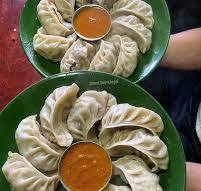

Momo is a traditional dumpling that originated in the Himalayan region and is one of the most popular dishes in Nepal. It is made by wrapping seasoned meat or vegetables in a thin dough and steaming it until tender.
Momos are commonly served with a spicy tomato-based dipping sauce. They can be prepared with different fillings, such as chicken, buff, vegetables, or pork, making them a delicious and versatile meal enjoyed by people of all ages.